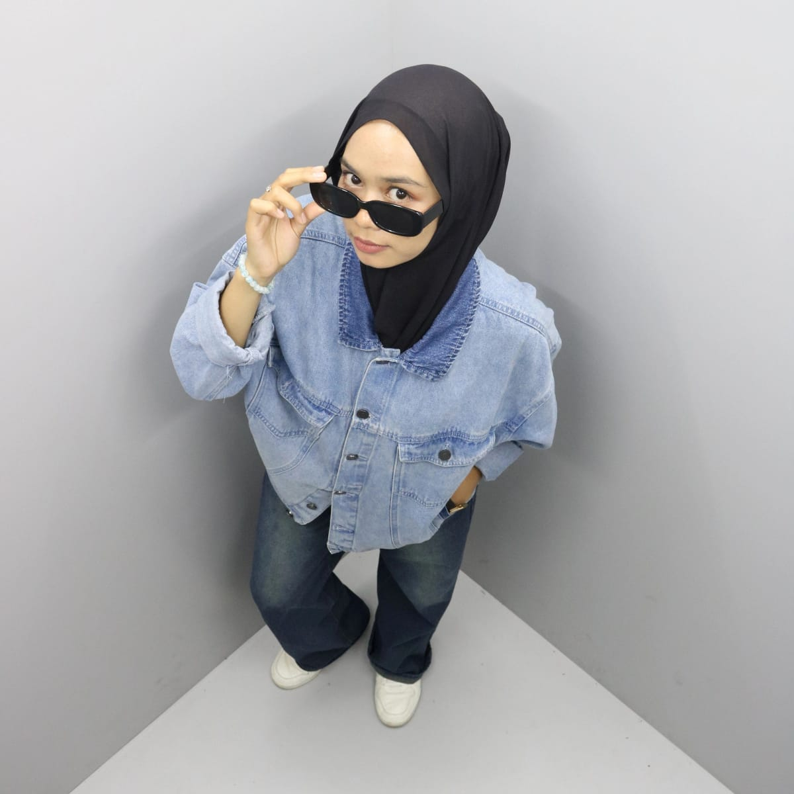

Anak IT yang nggak cuma belajar ngoding, tapi juga ngulik dan eksplor hal baru biar nggak ketinggalan zaman. “Suka ngoprek, ngoding, dan bikin project seru. Selalu penasaran sama teknologi terbaru.” Hidupnya nggak jauh-jauh dari bug, tapi percaya tiap error itu guruPercaya bahwa teknologi bukan hanya soal alat, tapi tentang bagaimana kita menggunakannya untuk mengubah dunia, Selain itu saya juga senang belajar hal baru.
| Skill | Experience |
|---|---|
|
|
"Halo, Nama saya Revi Tiarawati. Saya merupakan lulusan sekolah Menengah Kejuruan(SMK) di bidang Pengembangan Perangkat Lunak dan GIM. Saat ini saya sedang berfokus mengembangkan skill di bidang Software Enggineer yang memiliki kepribadian Jujur,Amanah dan Bertanggung Jawab. Saya memiliki minat yang besar dalam dunia teknologi dan pengembangan perangkat lunak. Saya senang belajar dan mengembangkan kemampuan saya dalam merancang, mengembangkan, dan menguji perangkat lunak. selain mempunyai skill coding saya juga bisa mengoperasikan komputer dan software dengan baik,seperti mengoperasikan Excel,powerpoint dan Microsoft Word saya senang mempelajari hal baru dan mudah beradaptasi maupun komunikasi.